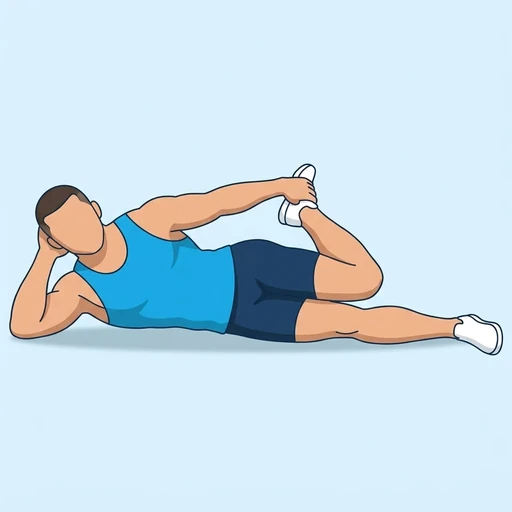

Lying Quad Stretch
A floor stretch for the front of the thigh: lying on your side, you bend the top knee and pull the heel toward your glute with your hand. Lying down takes balance out of the stretch, so you can relax and let the quadriceps lengthen.
Upper legs · Bodyweight · Beginner

Muscles worked by the Lying Quad Stretch
Primary
Secondary
Also called: quad, quads, quadriceps, quadriceps femoris, front thigh.
Equipment
No equipment — this is a bodyweight exercise.
How to do the Lying Quad Stretch
- Lie on your side with your legs straight and your head resting on your lower arm.
- Bend your top knee and take hold of that foot or ankle with your top hand.
- Gently pull your heel toward your glute, keeping your knees close together.
- Tuck your pelvis slightly so your lower back does not arch.
- Hold the stretch for the planned time while breathing slowly.
- Release the foot, roll to the other side and repeat.
Form tips
- Keep the knees side by side; letting the top knee drift forward turns it into a hip stretch.
- Do not pull the heel hard; ease into a stretch you feel in the front of the thigh, not in the knee.
- If you cannot reach the foot, loop a towel or strap around the ankle and pull on that.
At a glance
| Body part | Upper legs |
|---|---|
| Category | Stretching |
| Force type | Static |
| Mechanic | Isolation |
| Difficulty | Beginner |
| Equipment | Bodyweight |
| Goals | Mobility |
| Tags | Mobility, Stretching |
| MET | 5.0 (metabolic equivalent, for calorie estimates) |
| Unilateral | Yes |
| Bodyweight | Yes |
| Dataset id | lying-quad-stretch |
Lying Quad Stretch in German & Spanish
| German | Liegende Quadrizeps-Dehnung |
|---|---|
| Spanish | Estiramiento de Cuádriceps Tumbado |
Descriptions, instructions and tips ship in all three languages in the JSON.
Related exercises
Exercise data (JSON)
The record below is exactly what exercises.json ships for this exercise — names, descriptions, instructions and tips in English, German and Spanish.
{
"id": "lying-quad-stretch",
"name_en": "Lying Quad Stretch",
"name_de": "Liegende Quadrizeps-Dehnung",
"name_es": "Estiramiento de Cuádriceps Tumbado",
"description_en": "A floor stretch for the front of the thigh: lying on your side, you bend the top knee and pull the heel toward your glute with your hand. Lying down takes balance out of the stretch, so you can relax and let the quadriceps lengthen.",
"description_de": "Eine Dehnung am Boden für die Oberschenkelvorderseite: In Seitenlage beugst du das obere Knie und ziehst die Ferse mit der Hand zum Gesäß. Im Liegen entfällt das Gleichgewicht, sodass du dich entspannen und den Quadrizeps sich dehnen lassen kannst.",
"description_es": "Un estiramiento en el suelo para la parte delantera del muslo: tumbado de lado, flexionas la rodilla de arriba y llevas el talón hacia el glúteo con la mano. Al estar tumbado se elimina el equilibrio del estiramiento, así que puedes relajarte y dejar que el cuádriceps se alargue.",
"category": "stretching",
"force_type": "static",
"mechanic": "isolation",
"difficulty": "beginner",
"body_part": "upper_legs",
"primary_muscles": [
"quadriceps"
],
"secondary_muscles": [
"hip_flexors"
],
"goals": [
"mobility"
],
"tags": [
"mobility",
"stretching"
],
"is_unilateral": true,
"is_bodyweight": true,
"instructions_en": [
"Lie on your side with your legs straight and your head resting on your lower arm.",
"Bend your top knee and take hold of that foot or ankle with your top hand.",
"Gently pull your heel toward your glute, keeping your knees close together.",
"Tuck your pelvis slightly so your lower back does not arch.",
"Hold the stretch for the planned time while breathing slowly.",
"Release the foot, roll to the other side and repeat."
],
"instructions_de": [
"Lege dich auf die Seite, die Beine gestreckt und den Kopf auf dem unteren Arm.",
"Beuge das obere Knie und fasse den Fuß oder das Sprunggelenk mit der oberen Hand.",
"Ziehe die Ferse sanft zum Gesäß und halte die Knie dicht beieinander.",
"Kippe das Becken leicht nach hinten, damit der untere Rücken nicht ins Hohlkreuz geht.",
"Halte die Dehnung für die geplante Zeit und atme dabei langsam.",
"Lass den Fuß los, rolle auf die andere Seite und wiederhole."
],
"instructions_es": [
"Túmbate de lado con las piernas estiradas y la cabeza apoyada en el brazo de abajo.",
"Flexiona la rodilla de arriba y sujeta ese pie o tobillo con la mano de arriba.",
"Lleva suavemente el talón hacia el glúteo, manteniendo las rodillas juntas.",
"Retrae ligeramente la pelvis para que la zona lumbar no se arquee.",
"Mantén el estiramiento durante el tiempo previsto respirando despacio.",
"Suelta el pie, gira hacia el otro lado y repite."
],
"tips_en": [
"Keep the knees side by side; letting the top knee drift forward turns it into a hip stretch.",
"Do not pull the heel hard; ease into a stretch you feel in the front of the thigh, not in the knee.",
"If you cannot reach the foot, loop a towel or strap around the ankle and pull on that."
],
"tips_de": [
"Halte die Knie nebeneinander; wandert das obere Knie nach vorn, wird daraus eine Hüftdehnung.",
"Ziehe die Ferse nicht mit Kraft; gehe in eine Dehnung, die du an der Oberschenkelvorderseite spürst, nicht im Knie.",
"Kommst du nicht an den Fuß, lege ein Handtuch oder einen Gurt um das Sprunggelenk und ziehe daran."
],
"tips_es": [
"Mantén las rodillas una al lado de la otra; si dejas que la rodilla de arriba se adelante, el ejercicio se convierte en un estiramiento de cadera.",
"No tires con fuerza del talón; entra poco a poco en un estiramiento que notes en la parte delantera del muslo, no en la rodilla.",
"Si no llegas al pie, pasa una toalla o una cinta alrededor del tobillo y tira de ella."
],
"met": 5.0,
"images": {
"flat": {
"main": "images/flat/lying-quad-stretch-main.webp"
}
}
}Fetch just this exercise
const { exercises } = await fetch(
"https://exercise-dataset.com/exercises.json"
).then(r => r.json());
const ex = exercises.find(e => e.id === "lying-quad-stretch");Free for personal and commercial in-app use with attribution (“Exercise data by RepDB”) — see the license and ready-made attribution snippets. Redistributing the data as a dataset or API is not permitted.